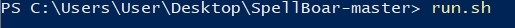
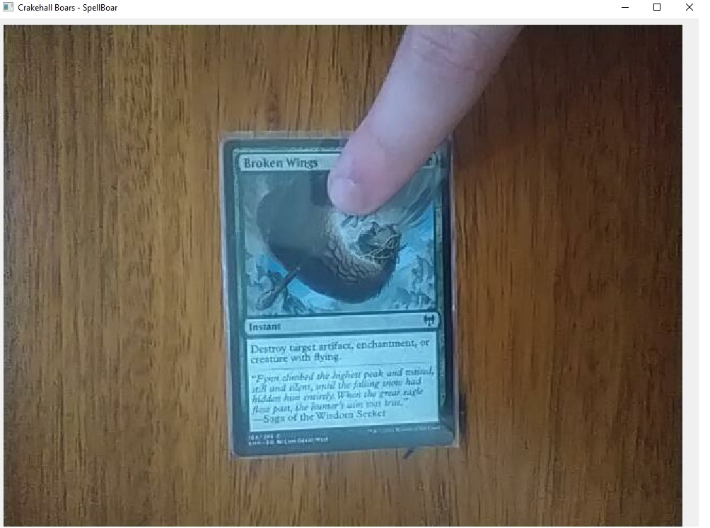
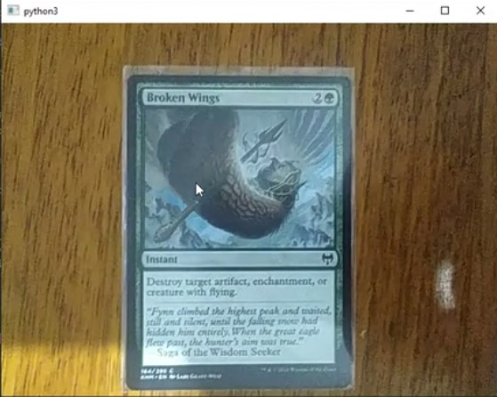

1. Na pasta do programa o usuário terá que abrir o terminal na pasta para dar início ao programa
2. Primeiramente ele vai dar executar o comando “setup.sh” para instalar as bibliotecas necessárias para o programa rodar.
3. Logo depois ele vai dar o comando “run.sh” para finalmente executar o SpellBoar
4. Com o programa em funcionamento o usuário agora deve posicionar uma carta na frente da câmera
5. Posicione o mouse em cima da carta e clique com o botão esquerdo do mouse.
6. E o programa automaticamente identifica a sua carta exibindo-a uma versão em alta resolução da mesma e com algumas estatísticas de tempo relacionadas ao processamento